DataArt Corporate Slides Kit
UI Showcase — ported from the Figma “DataArt Slides Design Element Kit”. Canvas 1920×1080 · Arial. Source = Figma structured data; pixel-verified via getBoundingClientRect.
📘 Blue notes = “how I plan to use this” — read them to see the intended role of each token, component & template when the skill assembles a deck.
Covered: 1·Colour palette (8 families + semantic) · 2·Typography (active set + pairing) · 3·Backgrounds (6 title + 8 content) · 4·Layout, grid & chrome · 5–7·Atoms & Molecules (logo, header×4, footer×3, chapter, icon-block, arrow · numbered-card×4, tag, sheet, contact, fast-fact, divider) · 8·Cover/title templates (cover · section-divider · final) · 9·Content templates (14 canonical 111:812 + timeline constructor + quote + stats/visual, all variation-driven) · 10·Use-as-is slides (5 fixed, rule-inserted).
Contents: 1 Colours · 2 Typography · 3 Backgrounds · 4 Layout · 5 Components · 6 Atoms · 7 Molecules · 8 Covers · 9 Content · 10 Use-as-is
1 · Colour palette
8 primitive families (swatch fills are authoritative). Semantic: text-default #000, text-contrast #fff, text-link #3453AD, surface-gray-dark #D6D7D8.
- How I use it:
- Blue 400 (#3453AD) — the one brand accent: links, card numbers/number boxes, icon-block titles, highlighted phrases, card borders, dark surfaces. Almost every "accent" on a slide is this.
- Gray — a tonal ramp (White → Black): black/#000 = body text, white/#fff = surfaces & contrast text, 75/#F1F2F2 = light card fill, 200/#D6D7D8 = dividers-as-fill / zebra rows / photo placeholders.
- Sky / Turquoise / Yellow / Red / Purple / Orange — categorical accents only: optional sheet-header colours, tags, the occasional chart/box. I keep slides mono-accent (Blue) unless a slide needs to distinguish categories.
- Orange 400 — the case-study tag gradient. Yellow/Orange/Red also appear baked into the vivid title backgrounds (not applied as fills).
Gray
White#FFFFFF
75#F1F2F2
100#E3E4E5
200#D6D7D8
400#A1A4A6
600#707477
900#2C3337
Black#000000
Blue
100#B0C6FF
200#284086
400#3453AD
600#1A316D
800#0A1E53
Sky
100#CBF2FF
200#89E2FF
400#53CFF8
600#21B9EC
800#0095C7
Yellow
100#FEF9D7
200#FFE088
400#FFCF4B
600#FFC90F
800#DFA000
Turquoise
100#B5F1EE
200#73E0DA
400#2BC6BF
600#08A8A4
800#067C7A
Red
100#FFDBD6
200#FF7B69
400#F0503C
600#D33A26
800#9E2111
Purple
100#DDC5FE
200#A77FE5
400#70529F
600#5C4089
800#482D72
Orange
100#FFF0D2
200#FFD380
400#FFB133
600#E58D00
800#A56709
2 · Typography (active set)
Curated active styles only (greyed-out rows removed). Names match Figma; ramp is intentionally non-contiguous.
- How I use it:
- H0 74 / H1 64 — cover & section-divider/final headings only (the big title moments).
- H3 44 — the standard slide heading (top of every content slide).
- H5 36 / H9 28 — card titles & sub-headings (numbered cards, icon-block titles, split/comparison column heads).
- H11 24 / H12 21 — sheet header / lead-ins, summary lines, card body; H12 21 is the workhorse body size on cards.
- H14 18 (bold) / H15 18 — small emphasis labels (bold sub-heads in comparison) and small body.
- P2 16 / P5 14 / P7 12 — paragraph body / captions / footer & fine print (P7 12 = footer everywhere).
- Tag 12 — uppercase chips. L2/L4/L6 — underlined links (e.g. LinkedIn on team cards).
- Gradation (2026-07): matches the Figma type styles (node 7:15860) 1:1 — literal base sizes 74·64·44·36·32·30·28·26·24·21·20·18·16·15·14·13·12, no ×4/3 scaling. Only H14 is bold.
H14 · 18 bold
Heading 18 BoldP2 · 16
Paragraph 16 — body copyP3 · 15
Paragraph 15 — body copyP5 · 14
Paragraph 14 — body copyP6 · 13
Paragraph 13 — body copyP7 · 12
Paragraph 12 — fine printTitle → body pairing (gap by title size)
When I stack a title over its body text I set the vertical gap by the title size (not a fixed value): title ≥32 → 24, 26–30 → 20, 21–24 → 18, 18–20 → 16 (tokens --gap-pair-lg/md/sm/xs). This keeps every title/body pair visually consistent regardless of size.
H3 + P2 · gap 24
Application Continuity
Knowledge is preserved and actively documented. No knowledge drain, no black-box risk.
H9 + P5 · gap 20
Managed Support
A DataArt-governed support model at reduced cost from Day 1.
H12 + P5 · gap 18
Governance
One point of accountability across the engagement.
3 · Backgrounds
Title (Dark) — covers / chapter starts / final slide. Content (Light) — one per section.
- How I choose a background:
- Title (dark) split into two role-pools (Figma 121:693/694, not interchangeable):
03 / 04 / 05 (vivid, warm accents) → cover (default 03); the final slide uses 03 / 05 only — bg-title-04 is FORBIDDEN on final (default final = 05). 01 / 02 / 06 (muted) → section dividers, one per section.
- Content (light) → content slides; I pick ONE per section and reuse it on every slide in that section (so a section reads as a unit).
- bg-cover-light (separate, see §8) → only the two-logo cover.
- statement.html is its own dark format and keeps bg-title-06.
Title · .bg-title-01…06 (cover = 03/04/05 · final = 03/05, NOT 04 · 01/02/06 = section dividers)
title-04 · cover ONLY (not final)
Content · .bg-content-01…08
4 · Layout, grid & chrome (composed 1920×1080 slide @50%)
Heading zone (96px) + accent rule · content zone (650.667px) · 3-column grid (gap 32 → 509.333px) · logo · footer with page-number · Numbered Card & Tag components.
- The frame every content slide obeys:
- Margins 153.333px both sides → 1613.333px content column; column gap 32.
- Heading zone (115,86): 1-line h72 (rule at y158) / 2-line h137 (rule y223). Content zone starts y210 (1-line) and always ends by y698 — nothing crosses that line.
- Logo small top-right (1177,106). Footer P7 12 at y739: tagline @115 · section @426 · page-number flush right @115.
- Columns =
.cols-N equal-fill (3→382, 4→278, 5→216, 6→175); I pick N by how many items the content has, so a row is always full and text never overflows.
Three Workstreams. One Accountable Partner
1
Application Continuity
Five years of MMS2 knowledge is preserved and actively documented. No knowledge drain.
2
Managed Support
A DataArt-governed support model at reduced cost from Day 1.
3
Governance
One point of accountability. Reduced operational overhead for leadership.
3
5 · Components
Tag — is-case-study / is-default
case study
default label
Tag — a small uppercase chip to label a slide's context. is-case-study (orange gradient) flags case-study slides; is-default (white) is a neutral section/phase label (e.g. "PHASE 2" on the tagged-list slide).
Numbered Card (number 44 · title 36 · body 21)
Numbered Card · vertical (this one) — my default for "N ordered points" rows (e.g. workstreams). Number box on gray-dark, big blue number, blue title, dark body. Sits in .cols-N so 2–4 fit a row. Other variants in §7.
1
Application Continuity
Knowledge is preserved and actively documented. No knowledge drain, no black-box risk.
2
Managed Support
A DataArt-governed support model at reduced cost from Day 1.
3
Governance
One point of accountability across the engagement.
Divider
Divider — 1px solid black (confirmed by pixel-sampling, not gray). I use it for column separators, summary-line rules, page-heading underlines and the sheet grid. Horizontal (.divider-h) and vertical (.divider-v) both 1px black.
6 · Atom Components
Logo — small (148×24) / large (426×69)
Logo — small = the in-deck header logo (top-right of every content slide). large = covers. Use the colored logo on light backgrounds, the white one on dark title backgrounds.
Header — single-stroke · multi-stroke · 2-logo · case-study(dark)
Header — the slide's title band (heading H3 44 + accent rule + logo). single = 1-line title (default), multi = 2-line title (taller band, content zone drops to y269), 2-logo = adds the client logo for partnership decks, case-study = dark band with a tag for case-study slides.
Footer — 3-slot · tagline+page · website(dark)
Footer (P7 12, y739). 3-slot = "Your Partner for Progress" + slide topic + page number — my default on content slides. tagline+page = 2-slot when there's no topic. website = "dataart.com" only, used on covers. Tagline & page colours flip to white on dark slides.
Chapter Number (01–09)
Chapter Number — the big vector digit on section dividers. I increment it per section (01, 02, 03…) so each chapter-start shows its number at the left edge next to the section title.


Icon Block — stacked (85×87) · icon-left (48) + paragraph
Icon Block — icon + title + body. icon-left = full-width list rows (stacked-list slide) or card cells (icon-cards slide). stacked / lg = centred icon-on-top for process steps. There's also a compact --inline variant (icon + single line) for tight bullet lists.

Full Spectrum Solutions
We fuse our product and strategy acumen with your industry insights to develop solutions tailored to your objectives.
Arrow — square · long
Arrow — long connects steps in the process-flow slide (short arrows between columns + one full-width connector, black). square is a small inline marker. Accent stays black/icon-main.
7 · Basic Molecules
Numbered Card — vertical · default · horizontal · with-icon
Numbered Card variants — when I pick which: vertical = ordered points in a row (workstreams). default (gray fill, blue border, number top / label bottom) = short labelled boxes, 2–6 per row (infra/cost lists). horizontal (number box + text right) = a vertical numbered list beside narrative text (split slide). with-icon (bordered, number + title + icon + body) = step cards in a journey (e.g. sales process), 5 per row.
1
Continuity
Knowledge preserved and documented.
3
Service Desk
A DataArt-governed support model from Day 1.
4
Governance

One point of accountability.
Sheet — header colours · zebra rows · 1613.333px
Sheet — comparison/pricing tables. R×C, equal columns auto-fill 1210, 1px black grid, cell pad 18/10. Header row = 32px; default header is white (real DataArt sheets) — the colour modifiers are optional. I shade specific rows with --alt (gray-dark) to highlight, not strict zebra.
Continuity
DataArt
Active
Yes
Contact Card · Fast Fact Card
Contact Card (279×488: photo + city + country/phone/email) — office/contact slides & the final slide's contact block. Fast Fact Card (big number + label) — stat call-outs ("9,999 engineers"). Also note the person cards used on team slides: horizontal = round avatar (org-chart), vertical = square 150 photo + LinkedIn link.
9,999
Consultants and Engineers
8 · Cover / Title templates
Title-type slides. Text editable within fixed blocks (paddings per tokens). Section divider's number (01–09) + heading change per section. Background pools (Figma 121:693/694): COVER uses bg-title-03/04/05 (vivid, default 03); the FINAL slide uses bg-title-03/05 only — bg-title-04 is forbidden on final (default 05); SECTION DIVIDERS use bg-title-01/02/06 (muted), one per section. The two-logo cover is LIGHT (bg-cover-light) with the DataArt + client logos.
Cover (dark)
Slide 1, standard. Dark bg (03), white large logo, H0 74 title, dataart.com. Use when there's no client logo.
Cover — two logos (120:498)
Slide 1, partnership variant. Light bg, colored DataArt logo + client-logo slot, dark title. Use whenever the deck must show both our and the client's logo.
Section Divider
Each chapter start. Muted bg (01/02/06), big chapter number (auto-increment) + section title. One per section.
Final
Closing slide. Vivid bg (04), "Thank you" + 4 contact lines. Last slide of the deck.
9 · Content templates (variable)
Body slides on the kit grid (header + content zone + footer). Content fully editable; counts VARY on the same tokens — cards row uses .cols-N (N=1–6 → width 382/278/217/175…), table is R×C, logo grid is R×C of 279×160 boxes (gap 32).
Cards row · 64:585 (.cols-N)
Use for: 2–4 ordered points with a short explainer + a summary line. Varies: N cards (col-dividers between).
Numbered boxes · 82:304 (.cols-N)
Use for: a list of short labelled items (infra/scope/cost) + caption lines. Varies: 2–6 boxes (fill the row).
Numbered-icon cards · 82:849 (.cols-N)
Use for: a step-by-step journey (number + icon + short text per step). Varies: N steps — set cols-N (2–6); cards auto-equalise height (min 332, grow if needed). Best at 2–5; at 6 (233.333px) the 53.333px title may wrap mid-word — keep titles short or use fewer columns.
Icon cards · 82:681 (.cols-N)
Use for: a few "highlights" with a longer paragraph each, under a sub-heading. Varies: N cards (2–4).
Statement / Lead · 84:443
Use for: one big claim on a dark slide between sections. Heading + supporting lead. Fixed format (bg-title-06).
Logo / box grid · 68:1052 (R×C)
Use for: client / partner / integration logos + a caption. Varies: R×C of 279×160 boxes.
Table · 69:1160 (R×C)
Use for: structured data — phases, pricing, comparison matrices. Varies: rows × cols; highlight rows with --alt.
Timeline / Gantt · 116:1107 (constructor)
Use for: a project plan / roadmap on one slide. Constructor: set --tl-cols (weeks/months/sprints/phases) + --tl-rows (lanes); each task pill placed by --from/--to (column units, fractional) + --lane + a colour. Scales to any size with no px math.
Plan table · 116:763 (constructor)
Use for: a project plan WHEN each task needs explanation columns. Same Gantt idea as a table — .sheet--plan: Activity + N week cols (fill the span cell with .sheet-cell--tl) + M info cols. Varies: rows (tasks), week columns, info columns.
Pipeline / Process · 118:1976 (constructor)
Use for: a process/pipeline chain with extra labels (and compare scenarios by stacking chains). Atoms: .pipe-step (32px tag bar + gray body) · .tag.is-* labels (0–2 per step: role/time) · .pipe-arrow connector · .pipe-step--accent terminal. Varies: N steps (equal-fill), 1+ chains, 0–2 labels each.
Next steps / Roadmap · 118:1005 (constructor)
Use for: a "what happens next" roadmap. Atoms: .steps-col colour panels (progress ramp) on a baseline of .step-num circles + .step-arrow-axis, with a .step-cap (icon + 18.667px label) under each step. Varies: N steps (equal-fill), any colour/title/bullets, one caption each.
Stacked list · 67:955 (N rows)
Use for: a few full-width points, each with a title + sentence (icon-block rows). Varies: N rows.
Tagged list · 82:537 (N rows)
Use for: a dense single-line bullet list under a tag + page-heading (scope/enhancements). Varies: N compact rows.
Process flow · 66:779 (N steps)
Use for: a left→right progression of named stages (icon + blue title + rule + → arrows in the gutters), e.g. Design→Build→Verify. Same 66:779 layout as the Framework slide. Varies: 2-4 columns.
Comparison · 84:469 (2 cols × M)
Use for: "what changes vs what stays" — 2 columns of bold-sub + paragraph items + framed summary lines. Varies: M items/column.
Split · 82:767 (text + list)
Use for: a concept explained on the left + a numbered step list on the right. Varies: N list items.
Team — vertical · 106:950
Use for: people with photo + name + LinkedIn (square photos). Varies: 3–10 people (cols-N + rows).
Team — roles org-chart · 104:790
Use for: a delivery team grouped by role/category (round avatars, category label per row). Varies: rows × people.
Quote
Use for: a single customer testimonial / pull-quote. Large quote (44) centred in the content zone + attribution. Editable: quote + attribution.
Stats + Map / visual
Use for: a CLIENT / company "X today" overview — a grid of the client's stats beside a free visual slot. Varies: number of stats; drop a client-relevant visual (their map / product shot / chart) into the right slot, or leave the labelled placeholder. Never put DataArt's global-presence map here — that map is DataArt's and belongs only on Fast Facts.
Media · diagram / screenshot
Use for: one dominant diagram / schema / screenshot / chart — especially carrying a real image over when migrating a deck into our kit. The image shows whole (object-fit:contain) in .media-frame — wide or tall, it letterboxes, never crops. Optional caption (≤110 chars).
Text + Media
Use for: an explanation paired with an image — left text column (589) + right framed visual (589). Varies: swap the two column lefts to put the image on the left. Common in deck migrations (text + diagram source slides).
Section placeholder (human-filled)
Use for: a section the human fills from the DataArt Slides Library — primarily Case Studies. The skill emits a section divider ("Case Studies") + this placeholder and stops; it NEVER fabricates case-study content. The person drops their real case-study slides in place of it.
10 · Use-as-is slides (fixed, rule-inserted)
Ready-made compositions inserted as-is (NOT count-flexed). Each has a fixed insertion rule — the skill drops it into the deck at the right spot when the rule applies.
Contacts · 40:244
Insert ALWAYS, right BEFORE the last (final) slide. 4 office contact cards. Photos are placeholders — drop real office photos on use.
Fast Facts · 96:546
Insert right AFTER the cover. 8 DataArt corporate stats + global-presence map. Verbatim DataArt only — numbers ship as-is, footer topic is the only edit. Its map is DataArt's footprint; never reuse it on another slide. For a client's stats use the Stats + visual slide instead.
End-to-End Capabilities · 112:692
Insert AFTER the Fast Facts slide. 4 capability columns (Innovate / Build / Modernize / Operate) with DataArt's standard service list.
Our Partnerships · 99:652
Insert ONLY if the project involves partnerships & integrations. 9 partner logos (AWS, Microsoft, GCP, Databricks, Snowflake, Salesforce, HubSpot, Stripe, Adobe) + caption.
Microsoft Industries · 107:1064
Insert ONLY if the project involves Microsoft technologies / a Microsoft partnership. Statement + 6 industry icons. (Figma typos "accross/ans" corrected.)
11 · Icon library (reusable line icons)
35 curated line icons (44×44, 2.667px stroke, #000000 ink + #3453ad Blue 400 accent) for any icon slot — already on-brand, drop in with no recolouring: <span class="ib-icon"><img src="../assets/icons/library/name.svg"></span>. Pick by meaning; full table in assets/icons/library/manifest.json.
Strategy & discovery
goal-target
Objectives, goals, 'why now', strategic focus, KPIs/targets.
innovation-wand
Innovation, ideation, R&D, transformation, the 'Innovate' capability.

discovery-search
Discovery phase, research, assessment, audit, finding the right approach.
integration-puzzle
Integration, system fit, solving complexity, modular pieces coming together.
Engineering & delivery
code-window
Software development, custom engineering, app delivery, the 'Build' capability.
terminal
Backend / DevOps / CLI / scripting, low-level engineering.

workflow
Process automation, CI/CD pipelines, orchestration, repeatable flows.

server
Infrastructure, hosting, on-prem/back-end systems, the platform layer.

cloud
Cloud, SaaS, cloud migration, anything hosted/managed off-device.
responsive-devices
Multi-platform, web + mobile, cross-device UX, responsive front-ends.
Emerging tech
ai-brain
AI / ML / GenAI, intelligence, smart features, the AI value prop.
cpu-chip
Compute, performance, hardware/embedded, AI infrastructure.
iot-circuit
IoT, connected devices, embedded systems, sensors/edge.
automation-robot
Automation, robotics, manufacturing, hands-off operations.
Data & analytics
chart-bar
Analytics, reporting, metrics, comparing categories.

chart-growth
Growth, ROI, business outcomes, upward trends, results.
chart-pie
Distribution, market share, composition, breakdown by segment.
Security & quality

security-shield
Security, compliance, protection, risk mitigation (check = verified-secure).
privacy-lock
Data privacy, encryption, access control, confidentiality.

certificate
Certification, ISO/standards credentials, formal accreditation.
quality-seal
Quality, assurance, guarantee, a vetted standard met.
People & collaboration
team
Teams, squads, dedicated team / staffing, group capability.
partnership-handshake
Partnership, client relationship, deals, long-term collaboration.
knowledge-sharing
Knowledge transfer, training, mentoring, enablement.

user
A single user, persona, role, individual stakeholder.
add-user
Scaling the team, hiring, onboarding, adding capacity.
Network & scale

network-nodes
Distributed systems, architecture, microservices, connected platform.
globe
Global delivery, worldwide reach, multi-region, international presence.
infinity-continuous
Continuous (DevOps/CD), ongoing/managed services, unlimited scalability.
Operations & support

settings-gear
Configuration, operations, the 'Operate' capability, tuning/setup.
maintenance-tools
Maintenance, support, modernization/fixing, the 'Modernize' capability.

clock
Time-to-market, speed, schedule, turnaround, deadlines.
Communication & docs
chat
Communication, collaboration, consulting, conversation/feedback.

mail
Contact, email, outreach, get-in-touch (good on contacts slides).

task-list
Scope, requirements, checklist, deliverables, structured to-dos.